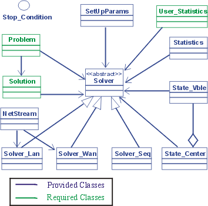

The MALLBA project is an effort to develop, in an integrated way, a library of skeletons for combinatorial optimization (including exact, heuristic and hybrid methods) that can deal with parallelism in a user-friendly and, at the same time, efficient manner. Its three target environments are sequential computers, LANs of workstations and WANs. The main features of MALLBA are:
Mallba skeletons are based on the separation of two concepts: the concrete problem to be solved and the general resolution method to be used. They can be seen as generic templates that just need to be instantiated with the features of a problem in order to solve it. All features related to the selected generic resolution method and its interaction with the concrete problem are implemented by the skeleton. While the particular features related to the problem must be given by the user, the knowledge to parallelize the execution of the resolution method is implemented in the skeleton, so that users do not need to deal with parallelism issues.
The design of the Mallba library focuses on easy to use skeletons and general and efficient implementations. To achieve both objectives, the C++ programming language was selected due to its high level, modularity, flexibility and efficiency features. We have reduced to a minimum the use of inheritance and virtual methods in order to provide better efficiency and ease of use. To instantiate most problems, a basic knowledge of C++ is enough, and only sequential code without side effects is needed.
Skeletons are implemented by a set of required and provided C++ classes that represent an abstraction of the entities participating in the resolution method. The provided classes implement internal aspects of the skeleton in a problem-independent way. The required classes specify information and behavior related to the problem. This conceptual separation allows us to define required classes with a fixed interface but without any implementation, so that provided classes can use required classes in a generic way.
More specifically, each skeleton includes the Problem and Solution required classes, that encapsulate the problem-dependent entities needed by the resolution method. The Problem class abstracts the features of the problem that are relevant to the selected optimization method. The Solution class abstracts the features of the feasible solutions that are relevant to the selected resolution method. Depending on the skeleton, other classes may be required. On the other hand, each skeleton offers two provided classes: Solver and SetUpParams. The former abstracts the selected resolution method. The later contains the setup parameters needed to perform the execution (e.g. number of iterations, number of independent runs, parameters guiding the search, etc.). The Solver class provides methods to run the resolution scheme and methods to consult its progress or change its state. The only information the solver needs is an instance of the problem to solve and the setup parameters. In order to enable an skeleton to have different solver engines, the Solver class defines a unique interface and provides several subclasses that provide different sequential and parallel implementations (Solver_Seq, Solver_Lan and Solver_Wan). In Fig. 1 is shown the common design of Mallba skeletons.

The implementation of each skeleton is contained in three files:
In additional, the user must configure the method parameters in the file <skeleton>.cfg.
There are several basic steps to building and installing the Mallba Library:
1. Download the source file (download)
2. You need to have installed MPICH (you can get it from MPICH site)
3. Unpack the source4. Change to the toplevel directorytar xzvf mallba.tar.gz
5. Configure the Mallba Library by editing the environment file.cd Mallba
6. Build the Mallba Library by running
make all
or
make libs
After the installation, the Mallba directory has the following content :
-rw-r--r-- 1 user users 378 sep 24 09:39 Makefile
drwxr-xr-x 4 user users 4096 sep 24 09:48 ProblemInstances
-rw-r--r-- 1 user users 345 sep 24 16:29 environment
drwxr-xr-x 2 user users 4096 sep 24 16:43 inc
drwxr-xr-x 2 user users 4096 sep 24 17:49 lib
drwxr-xr-x 5 user users 4096 sep 24 09:41 rep
drwxr-xr-x 2 user users 4096 sep 24 17:49 src
The /ProblemInstances directory containing the instances for the problems and the /rep directory containing the implementation of the skeletons and the example problems.